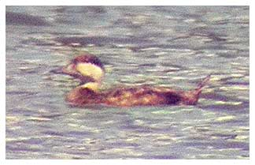

Common Scoter
An uncommon visitor to the reservoir. A Sea Duck that will seek shelter
inland during harsh conditions.

03/08/75 - 9 birds
09/04/78 - Pair
11/07/81 - 2 females
12/04/86 - Pair
18/01/87 - 2 birds, inc. a male
28/04/95 - 2 males, for the one day only (DWH)
31/10/98 - Single male, for the one day only (DWH)
14/10/99 - Single bird. (Recorder unknown)
09/08/00 - Pair with the male only seen the following day (KGH)
03/08/04 - Single bird, female or juv (KGH)
29/07/07 - Single bird, female or juv (KGH)
15/10/10 - 2 females (DWH)
08/11/10 - Single bird, female or juv (KGH)
12/04/20 - Single female type (DWH)